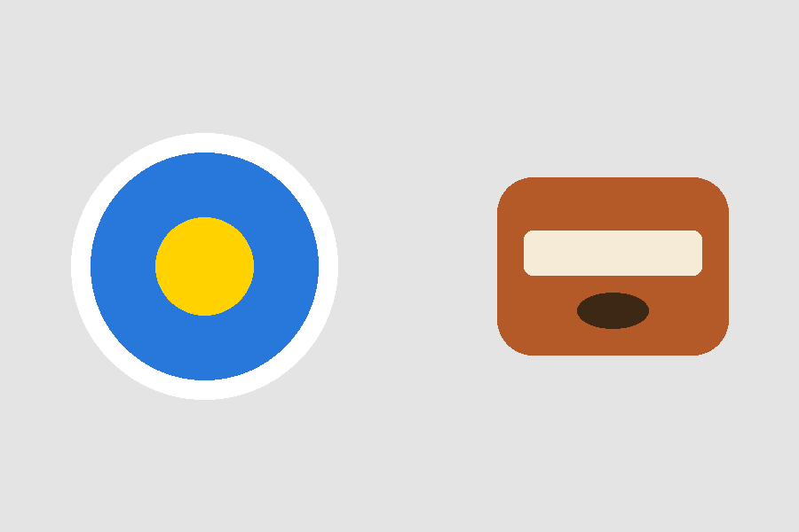
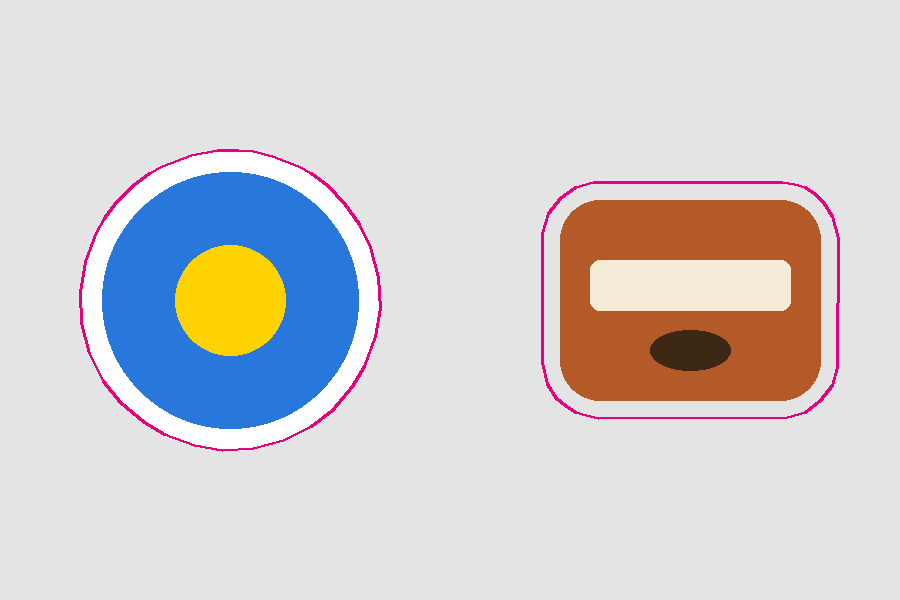

Контур реза по картинке (die-cut / kiss-cut) рабочий образец
Задача из печати наклеек/стикеров: по растровому макету (PNG/JPG) автоматически построить замкнутый контур реза для плоттера/станка, в реальных миллиметрах. Ниже — реальный прогон моего движка на тестовом макете с двумя объектами. Зависимости только numpy + Pillow (зеро-инсталл, без OpenCV); в проде сегментацию легко заменить на OpenCV — интерфейс тот же.
1. Вход → результат

Исходный макет: два объекта на фоне. У одного есть готовая kiss-cut кайма (белая обводка), у второго — нет.

Контур реза наложен для проверки глазами. По объекту с каймой рез ведётся ПО кайме; по объекту без каймы — силуэт + наружный отступ 3 мм (bleed).
2. Что движок определил сам
Объект
Режим реза
Точек в контуре
Объект 1
kiss-cut — по готовой кайме
37
Объект 2
силуэт + отступ 3 мм (каймы нет)
25
Размер привязан к реальности через DPI: макет 900×600 px при 150 DPI = 152.4×101.6 мм. Контур сглаживается (без рваных зубцов) и упрощается (Дуглас–Пекер), чтобы плоттер резал чисто.